晉卦 火地晉
晉，康侯用錫馬蕃庶，晝日三接。初六，晉如摧如，貞吉。罔孚裕无咎。六二，晉如愁如，貞吉。受茲介福，于其王母。六三，眾允，悔亡。九四，晉如鼫鼠，貞厲。六五，悔亡，失得勿恤。往吉无不利。上九，晉其角，維用伐邑。厲吉无咎，貞吝。
【卦名】
今本：晉 說文：㬜 帛書：溍 歸藏：晉 秦簡：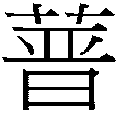 清華簡：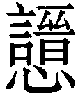 海昏：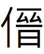
疾進、進獻，插入。
晉卦的晉為「進」的意思。《彖傳》：「晉，進也。」《序卦傳》：「物不可以終壯，故受之以晉，晉者進也。」《爾雅》：「進也。」晉就是進的意思。
甲骨文象兩支箭插入容器中，取其「進」義，為進入的意思，而且是「疾進」，也就是快速進入。郭沫若認為，畫的是日光似箭疾進。另一說認為，晉即箭。也有學者認為，晉字象兩支箭倒插入容器中，為插入的意思。這些字義，在古文中也都找得到。
《雜卦傳》：「晉，晝也。」這是取晉卦日出地上的卦象，意指晉為白天。《說文》作㬜：「進也，日出萬物進。從日從臸。《易》曰：明出地上，㬜。」《說文》兼取易經中「進」與「晝」的意思。段玉裁注：「《周易彖傳》曰：晉，進也。以疊韵為訓，凡進皆曰晉，難進亦曰晉，《周禮》凡田：『王提馬而走，諸矦晉』是也。《禮》古文、《周禮》故書皆叚晉為箭。」依段玉裁，進或難進都曰晉，古文中假借晉為箭。
晉也有插入的意思，通搢。《周禮》「王晉大圭」鄭玄引鄭司農：「晉，讀為搢紳之搢，謂插於紳帶之間，若帶劍也。」「一音箭，插。」
高亨認為周易的晉有「侵伐」之意，本字應是「戩」。此說亦可供參考。《經典釋文》：「孟作齊，齊子西反，義同。」孟氏易作「齊」者，可能借為疾，取其疾進之義。《爾雅》〈釋詁〉：「齊，速，疾也。」〈釋言〉：「疾，齊，壯也。」齊可通疾與速。又〈釋言〉：「劑，翦，齊也。」齊又通翦，翦亦通箭。高亨：「戩者，進而有所侵伐也。實始戩商，猶云實始侵商耳。毛詩作翦而訓齊者，齊當讀為劑，亦謂侵削商土，大恉與作戩不殊。」
帛書晉卦多了水字旁作溍，歸藏作晉，秦簡多了草字頭作，清華簡作，這些不同寫法應該都可視為晉的異體字。
【卦義】
晉為疾進之義，有別於漸卦之漸進。晉卦的進，也有進獻之義。
易傳同時都以「進」解釋晉卦和漸卦。《序卦》：「晉者，進也。進必有所傷。」「漸者進也。進必有所歸。」《彖》傳：「晉，進也。」「漸之進也，女歸吉也...止而巽，動不窮也。」
晉與漸的進，大不相同。漸為止而巽，為循序漸進。而晉卦的進，是疾進。晉字本義就有疾進之義。
《爾雅》：「薦，晉，進也。」「羞，餞，迪，烝，進也。」古文中進也常通薦，即敬獻的意思。晉卦卦義典故即康侯敬獻兵馬助周公平定三監之亂，卦辭說「康侯用錫馬蕃庶」的錫亦取敬獻之義。
卦象上離日，下坤地，日出地上，黎明、希望之象。離又可象徵聰明、智慧、才華，坤為眾，離在坤上為才華出眾，能人得以擢升之象。《彖傳》說：「順而麗乎大明，柔進而上行，是以康侯用錫馬蕃庶，晝日三接也。」「順而麗乎大明」指內坤順，外離明，坤柔在下為能順於離日者。柔進而上行則指六五，由觀卦六四上行至五。《象傳》說「君子以自昭明德」，為賢能者毛遂自薦之義。
與晉卦相反的是明夷卦，明夷卦離日在下，坤地在上，太陽入於地，才華埋沒於人群，所以是黑暗、亂世之卦。坤為布，離為火，以布蓋火，為滅火之象。晉為聰明才能表現於外，明夷則要藏明於內，韜光養晦。
《雜卦》：「需不進也。」需與晉陰陽相反，需為不進，晉則是進。
得晉卦，才華有機會嶄露頭角，工作上將受到重用。然應當像康侯一樣，自昭明德，積極表現。
晉卦典故與武王弟弟康侯封有關，從卦辭「康侯用錫馬蕃庶」及上九「維用伐邑」來推測，記載的是康侯協助周公伐商邑之事。康侯雖然曾參與武王伐紂，但當時年紀尚小，在該次伐商中武王殺了商紂準備祭祀時，康叔負責鋪地毯：「衛康叔封布茲，召公奭贊采，師尚父牽牲」。《史記‧管蔡世家》又說，武王伐紂之後「封功臣昆弟」，「康叔封、厓季載皆少，未得封」。康叔封當時還太年輕而未受封。由此推測，第一次伐商邑時康叔可能未至弱冠，但已能隨軍而行，甚至有能力殺敵。而在之後與周公平定三監之亂之後，則被大封為衛君，此時不但已經弱冠，而能獨當一面。因此晉卦較可能是康侯協助周公平三監之亂，而不是協助武王之伐商。
晉卦卦義當取自康侯自昭明德，以自己強大的兵馬敬獻成王，協助伐商邑。此既有敬獻義，也有疾進的意思。而就經文的字義來說，晉字當解釋為疾進，或解釋為征伐。
康侯
康侯是武王和周公的九弟，名封，與周公感情最好，但年齡可能相差頗大。康叔曾經參與武王伐紂和周公平三監之亂，封於衛之前稱康叔，《左傳》及《史記》中都稱為「衛康叔」，但在傳世出土的遺物中都稱「康侯」，與《周易》一致。
康侯的事跡《史記》有記載，主要在《衛康叔世家》，其次是《周本紀》，《魯周公世家》和《管蔡世家》等。
據史書記載，武王母親大姒共生十個兒子，長子伯邑考被商紂所殺。武王發排行老二繼承文王之業，老三管叔鮮，老五蔡叔度，老八霍叔度，後來與武庚聯合叛變，為三監之亂。周公旦為老四，康叔封排行第九，老十為冉季載。
武王伐紂之後將商之遺民交給商紂兒子武庚祿父，不絕商祀，並封蔡叔、管叔，霍叔協助就近監管武庚。武王死後，成王繼位，由於年幼，周公攝政。管叔和蔡叔等懷疑周公篡政，因此聯合武庚叛變。周公平定這場「三監之亂」後，周成王將殷商遺民集中起來成立宋國，並交給商紂兄長微子啟治理。周成王並封康叔為衛君，康叔從原有的封地康搬到衛，以殷墟為都城，做為周在東邊的重要防衛。
在封於衛之後，周公擔心康叔年紀太輕，特別寫了《康誥》、《酒誥》、《梓材》給康叔，並以「小子封」稱呼他。
在兄弟之中周公和康叔兩人最為親密，《左傳》定公六年這麼說：「大姒之子，唯周公康叔為相睦也。」《史記‧漢興以來諸侯王年表第五》記載，武王諸弟之中，封地最大的是周公的魯國（由周公兒子伯禽受封），和康叔的衛國，地各四百里。相較之下，同姓之中五十五人封地較大的不過百里，小的甚至只有三十里。由此可見康叔之地位，以及其對周公來說之重要。
然而，史書對於康侯如何協助平定三監之亂記載相當有限，只簡單提到受封衛國之事。《周易》晉卦很可能是該段史實的記錄。
| 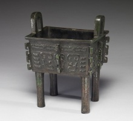
康侯方鼎：內有識文「康侯丰作寶尊」。 |
{kind=link}
除了正史記載，康侯也有一些遺物傳世。可能是康侯墓被盜之後，文物陸續流出為各方所收藏。
于省吾《易經新證》：
康侯即《書‧康誥》之康叔封也。金文康叔均作康侯。清國子監舊藏有康侯丰鼎，丰封古今字。余藏有康侯兩斧，見《雙劍誃吉金圖錄》。姚華舊藏有康侯爵，尊古齋所見《吉金圖錄》有康侯刀，又聞賈人言有康侯罍，已歸諸異域矣，均河南濬縣康侯墓中所出。又余近見有「者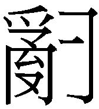士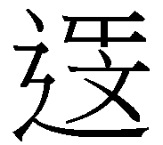 」，其銘曰：「王來伐商邑，延命康侯啚于衛。者士眔啚，作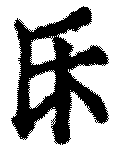考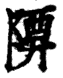彝。」首言來伐商邑者，謂成王平武庚之叛也。延命康侯啚于衛，吳北江先生謂啚即圖字，是也。言命康侯圖于衛也。馬融謂，康，圻內國名。世本：康叔居康，從康徙衛。
」，其銘曰：「王來伐商邑，延命康侯啚于衛。者士眔啚，作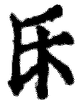考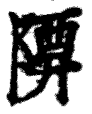彝。」首言來伐商邑者，謂成王平武庚之叛也。延命康侯啚于衛，吳北江先生謂啚即圖字，是也。言命康侯圖于衛也。馬融謂，康，圻內國名。世本：康叔居康，從康徙衛。
于省吾所說的清朝國子監舊藏「康侯丰鼎」，即現今台北故宮收藏的康侯方鼎，內有識文「康侯丰作寶尊」，據故宮說明，是成王時康侯自作以祭祀宗廟的禮器。《周本紀》：「成王長，用事，舉康叔為周司寇，賜衛寶祭器，以章有德。」
而「者士 」即大英博物館的「康侯簋」，又名「沫司徒疑簋」，銘文解讀每個古文字學家或有不同，但確定記載成王伐商邑之後封康侯於衛國之事。如中研院「先秦甲骨金文簡牘辭彙資料庫」解讀為：
」即大英博物館的「康侯簋」，又名「沫司徒疑簋」，銘文解讀每個古文字學家或有不同，但確定記載成王伐商邑之後封康侯於衛國之事。如中研院「先秦甲骨金文簡牘辭彙資料庫」解讀為：
王朿伐商邑，徒令康侯啚于衛，沫司徒遷眔啚，作厥考尊彝。
文義大致為，周成王討伐商邑之後，命令康侯遷到衛國做為周的邊防城邑。
《焦氏易林》則有兩處可能與康侯有關的記載。隨之恒「齊姜叔子，天文在位。實沈參墟，封為康侯」或許與封被封為康侯有關。萃之噬嗑：「六爻既立，神明喜告。文定吉祥，康叔受福。」
↓ 大英博物館藏的康侯簋
|
圖：Sailko |
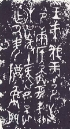 |
{kind=link}
{kind=link}
{kind=link}
晉，康侯用錫馬蕃庶，晝日三接。
《彖》曰：晉，進也。明出地上，順而麗乎大明，柔進而上行，是以康侯用錫馬蕃庶，晝日三接也。
《象》曰：明出地上，晉。君子以自昭明德。
《二三子》：易曰：「康侯用錫馬番庶，晝日三接。」孔子曰：此言聖王之安世者也。聖人之正，牛參弗服，馬恒弗駕。不憂乘牝馬□□□□□□□□□□粟時至，芻稿不重，故曰錫馬。聖人之立正也，必尊天而敬眾，理順五行，天地無菑，民□不傷，甘露時雨聚降，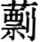風苦雨不至，民悤相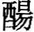以壽，故曰番庶。聖王各有厽公、厽卿，晝日三［接，□□□□］者也。」
急速地進入敵方陣地，康侯貢獻馬匹眾多，一日連續三次告捷。
晉此處有二義，一是進獻，講的是康侯進獻兵馬。二是疾進，可能是講三監之亂的某一戰役中，因康侯的眾多兵馬而告捷。晉為急速進入，藉以說明直取敵營。意思近似於高亨解釋的侵伐。
傳統解釋，康侯藉以被賜予眾多的馬匹，白日三次接見。如朱熹：「康侯，安國之侯也。錫馬蕃庶，晝日三接，言多受大賜，而顯被親禮也。」程頤：「康侯者，治安之侯也。上之大明，而能同德以順附治安之侯也，故受其寵數，錫之馬眾多也。車馬，重賜也。蕃庶，眾多也。不惟錫與之厚，又見親禮，晝日之中，至於三接，言寵遇之至也。」
帛書《二三子》引孔子，以安世之聖王說明，認為錫馬繁庶講的是人民生活富裕而安樂。
根據顧頡剛〈周易卦爻辭中的故事〉考證，這裡的康侯即《史記》與《左傳》中的「衛康叔」，因為他是武王的弟弟，原本封地在康，因此稱「康叔」。周公平三監之亂後，封為衛君，並從康遷到衛，因此史書記載為「衛康叔」。而在傳世的禮器中，皆作「康侯」。該見解已廣受當代學者所接受。
傳統注解都以「康」為通用的修飾辭，安康、康美，或尊貴的意思，未知「康侯」即武王弟康叔，名封。例如馬融：「康，安也。」鄭玄：「康，尊也，廣也。」王弼：「康，美之名也。」陸績：「康，安也，樂也。」朱熹：「康侯，安國之侯也。」
自古易學家都相信，《周易》卦辭為文王所作，爻辭周公完成。「康侯用錫馬蕃庶」雖證實為周初康侯協助伐商邑，但事績顯然在文王死後，因此傳統易學家的立場，就算看出康侯即衛康叔，恐怕也無法承認這就是衛康叔的事績。
【字義】
錫：音義同「賜」，與的意思。傳統解釋為賞賜，單指上對下的給予。但觀《尚書》，上對下的賞賜曰錫，下對上的敬獻也是錫。因此錫本義應是給予，無論上對下或下對上都是錫。如《禹貢》「九江納錫大龜」、「禹錫玄圭，告厥成功」（按：此為禹向天地敬獻玄圭），《堯典》「師錫帝曰」（按：師為眾，眾人向帝敬獻），錫都是敬獻之義。高亨即解釋為「敬獻」。此處當解釋為敬獻較佳。
蕃庶：眾多。荀爽：坤為眾，故曰蕃庶矣。
康侯用錫馬蕃庶：康侯用以敬獻眾多的馬匹。或可解釋為康侯用以賜予眾多的馬匹。但依文義及六爻脈絡，若是康侯為下對上的錫，則顯然是對成王或周公。若是錫解釋為上對下的賞賜，則無接受賞賜者，康侯用以賞賜誰？此文義稍差。
晝日三接：一日三次告捷。言戰爭大獲全勝，一日之間多次傳出捷報。傳統易學家多解釋為一日三次接見，言受到周王重視與重用的樣子，整天不停地召見。晝日有二解，一是白日，白天。二是整日，一日。晝日，以白日象一日。三接，兩種解釋。一是三次接見。傳統多作如是解，如王弼：「以訟受服，則終朝三褫。柔進受寵，則一晝三接也。」孔穎達：「晝日三接者，言非惟蒙賜蕃多，又被親寵頻數，一晝之間，三度接見也。 」二，接通捷，勝也。三接即三捷，三勝，戰爭三次告捷，連連告捷之意。《釋文》：「如字，鄭音捷，勝也。」《爾雅》：「接，翜，捷也。」《禮記》「接祭而巳矣」孔疏：「接，祭之也。接，捷也。捷，速也。速而祭之。」「接以大牢」鄭玄注：「接讀為捷。捷，勝也。」《荀子‧大略》：「先事慮事謂之接，接則事優成。」楊倞注：「接讀為捷，速也。」
自昭明德：自己顯耀自己的光明德行。《說文》：「昭，日明也。」昭原意為太陽光明，引申之，凡是光明而顯耀者都可稱昭。朱熹：「 昭，明之也。」孔穎達：「昭亦明也，謂自顯明其德也。」晉為離在坤上，日出地上，才智出眾之象。得晉卦，君子當積極表現出聰明之德，反之明夷卦離在日下，應韜光養晦，藏其明。
初六，晉如摧如，貞吉。罔孚裕无咎。
《象》曰：晉如摧如，獨行正也；裕无咎，未受命也。
長驅直入，無人能擋，貞定為吉。捕獲的俘虜眾多，沒有罪咎。
傳統解釋為進退兩難，貞定則吉。不受信任，保持寬裕則不會有罪咎。初六因處最卑微之位，所應為四非君（五才是君位），受到懷疑，無法讓人信任，因此受到挫折，無以進升，進退兩難。貞吉意謂堅定不動，以守正之不變應萬變則可吉。保持內心的寬泰，可得无咎。
【字義】
晉如摧如：有兩種解釋，多數易學家解釋為進退兩難的樣子。晉如，前進的樣子。摧如，後退的樣子，或者為挫折的樣子。虞翻：「晉，進。摧，憂愁也。」程頤：「晉如，升進也。摧如，抑退也。」《本義》：「以陰居下，應不中正，欲進見摧之象。」《釋文》：「摧如，罪雷反，退也。」但依《說文》及《爾雅》，摧為至，到達，晉如摧如當解釋為疾進而到達。《說文》：「擠也，从手崔聲。一曰挏也，一曰折也。」現在通解摧多取折義，引申之為折斷、挫敗，段注：「《釋詁》、《毛傳》皆曰：摧，至也，即抵之義也。」《爾雅．釋詁》：「摧，至也。」帛書作「溍如浚如」。恒卦初六「浚恒」帛書作「敻恒」，浚為深入的意思。晉如浚如，不但迅速攻下並進入敵區，而且深入敵營。《詩經》中幾次提到「浚」，指的是衛國的浚邑，未知是否與此有關。
罔孚裕无咎：《說文》引作「有孚裕無咎」，段玉裁說：「今經有作网，虞翻、王弼同。則未知許所據孟易獨異與？抑字譌與？」「罔孚裕无咎」當讀作「罔孚裕，无咎」。罔即古文的网，網的初文，依段玉裁，罔當作网。孚為俘虜。裕，充裕。網俘裕，所捕獲的俘虜相當多，此通「有孚裕」，有亦有獲得義。因捕獲俘虜眾多因此而得無咎。傳統讀作「罔孚，裕无咎」，罔通亡、無。罔孚，不信。孚，信。初六貿然前進的話，不會受到信賴，因此說「罔孚」。裕，寬裕，形容處之泰然的樣子。心能寬裕，泰然處之則可無咎。依傳統讀法，則當以《說文》「有孚，裕無咎」文義較佳。此事要有孚信而又泰然處之，可得無咎。帛書在貞吉之後為「悔亡復浴无咎」，亡通罔，依帛書來校定，今本經文可能脫去悔字，作「悔亡，孚裕，无咎」，或再統合《說文》，可能作「悔亡，有孚，裕无咎」。
六二，晉如愁如，貞吉。受茲介福，于其王母。
《象》曰：受茲介福，以中正也。
急速攻入，卻又讓人感到憂愁，貞定則吉。受到王母很大的祝福。
康侯協助周公伐商邑，雖然進兵順利，但因兄弟相殘，還必需兼及母親之感受，因此而憂愁。後來受到王母的祝福。
六二之愁如，雖柔中，但前有艮山阻擋，上與六五無應，靜而難動者。
【字義】
愁如：《說文》：「憂也。」「愁如」或言進入之困難，因此發愁。六二雖柔中而當位，但與六五不相應，因此愁如。但只要貞定，久之即會受王母之賜福，勿憂。鄭玄：「愁，變色貌。」
受茲介福：受此大福於王母，能夠受到王母極大的祝福。茲，此也。《說文》：「艸木多益。」段注：「經典：茲，此也。」介為大。馬融、虞翻：「介，大也。」王弼：「乃受茲大福于其王母。」
王母：康侯時之王母有兩種可能。一是武王與康侯之母，即大姒。二是成王之母。推理可能指的是大姒，因出兵平定三監之亂恐將兄弟相殘，平定之後周公殺管叔，流放蔡叔，霍叔貶為庶民。可能因此之故，這次出兵必需得到母親大姒之首肯。而在此次出兵裡，最擔心的就是母親大姒的態度，因此愁如。但後來不但受到大姒的諒解，還得到很大的祝福。只是大姒生卒年目前仍不詳，此說當假設大姒當時未亡。
六三，眾允，悔亡。
《象》曰：眾允之，志上行也。
眾人允諾，不再後悔。六三承四應上，率眾陰承順於九四君子，因此能得眾人之允許、信任。眾人皆認同，因此無悔。
六三為下坤之上，率三陰爻以承九四，眾允之象。
【字義】
允：通解為信，但也有允當、允許、首肯的意思。《說文》：「允，信也。」《爾雅．釋詁》：「允，信也。」王弼：「志在上行，與眾同信，順而麗明，故得悔亡也。」虞翻：「坤為眾。允，信也。土性信，故眾允。」甲骨文允字為首肯，允當之義，與現今白話用法一致。眾允，眾人之允許。
九四，晉如鼫鼠，貞厲。
《象》曰：鼫鼠貞厲，位不當也。
像鼫鼠一樣的進入，堅持則危險。
傳統解釋「鼫鼠」為比喻有如小人，貪婪而到處鑽營，因此不可堅定於此。
鼫鼠為地鼠或五技鼠。此處應該以戰術之使用來看，要有如鼫鼠一樣，以隱伏方式攻入。或者不應拘於正規戰法或單一戰法，要像鼫鼠一樣有五種技法，若堅持正規或單一的戰法為「貞」，貞則厲，有危厲。
九四居互體坎中艮上，坎為隱伏，艮為鼠，隱伏在下的鼠即鼫鼠。
鼫鼠：鼫，音「十」，鼫鼠到底是什麼動物眾說紛云，傳統通行說法為鼫鼠是一種貪得無厭的大鼠，又喜歡在地底下鑽營。比喻人行為及人格卑劣。《子夏傳》作碩鼠。鄭玄：「 《詩》云：碩鼠碩鼠，无食我黍。」《九家易》：「鼫鼠，喻貪，謂四也。體離欲升，體坎欲降。游不度瀆，不出坎也。飛不上屋，不至上也。緣不極木，不出離也。穴不掩身，五坤薄也。走不先足，外震在下也。五伎皆劣，四爻當之。故曰晉如鼫鼠也。」《釋文》：「鼫鼠，五技鼠也。《本草》：螻蛄，一名鼫鼠。」翟元：「鼫鼠晝伏夜行，貪猥无已。謂雖進承五，然潛據下陰，久居不正之位，故有危厲也。」帛書作「炙鼠」。
六五，悔亡，失得勿恤，往，吉无不利。
《象》曰：失得勿恤，往有慶也。
不再後悔，誓在必得，勿憂慮，前往，將吉而無往不利。
「失得勿恤」當作「矢得勿恤」。
傳統註解作「失得勿恤」，意思為不要有得失心，患得患失。《象》曰：「失得勿恤，往有慶也。」得失不要在意，前往則能夠有喜慶。
六五為晉卦的主爻，也是君位，處上離之中。離為矢為得。
【字義】
失得勿恤：兩種解釋，一，作「矢得勿恤」，「失」孟馬鄭虞王肅本作「矢」，矢即誓。馬融、王肅：「離為矢。」荀爽：「五從坤動而來為離。離者，射出，故曰矢得。」虞翻：「動之乾，乾為慶也。矢古誓字。誓，信也。」二是不要憂慮得失。失得如字，失和得。恤，音序，憂慮。勿恤，有勸戒君子勿患得患失之意。傳統易學家皆做此解。如孔穎達：「既以事任下，委物責成，失之與得，不須憂恤，故曰失得勿恤也。」朱熹：「一切去其計功謀利之心，則往吉而无不利也。」
上九，晉其角，維用伐邑，厲吉无咎，貞吝。
《象》曰：維用伐邑，道未光也。
長驅直入，勢如破竹，藉此氣勢來征伐城邑。以此而進，雖艱苦但可得吉而無咎，若堅定不進則將有吝。
晉卦為康侯助周公及成王平三監之亂的故事，此處的邑當指武庚的商邑。晉其角為形容其進入商邑勢如破竹的樣子。
大壯九三羸其角，為羝羊羊角纏繞而受困，過剛而無以前進。姤卦上九姤其角，亦是過剛而不得進之義。帛書易傳引孔子：「鍵（乾）之炕龍、壯之觸蕃、句（姤）之离角、鼎之折足、酆之虛盈，五繇者，剛之失也，僮（動）而不能靜者也。」大壯的觸蕃（羸其角）及姤之姤其角，都是動而不能靜者，屬動而不能中而亡者。反觀晉上九，剛而居柔，又為六五所承，為剛得柔助，動而能進者，因此曰「晉其角」。以此征伐商邑，雖艱困但能得吉而無咎。
晉卦君子當自昭明德，並無過亢之疑。因此此爻以吉無不利占之。
傳統依《象傳》，維用伐邑為「道未光」，解釋為負面義。
【字義】
晉其角：攻入城邑有如角之穿物。角，獸之角，剛硬而在上者。《詩經‧行露》：「誰謂雀無角，何以穿我屋？誰謂女無家，何以速我獄？」鄭注：「獄，埆也。」角有穿屋而入的涵義。若借為埆，則有獄的意思。依王弼，角為頂端：「已在乎角，在猶進之，非亢如何？」朱熹：「 角剛而居上。上九剛進之極，有其象矣。」孔穎達解釋為隅，角落：「晉其角者，西南隅也。上九處進之極，過明之中，其猶日過於中，已在於角而猶進之，故曰進其角也。」李光地以知進不知退詮釋：「晉其角者，是知進而不知退者也。知進而不知退者，危道也。」
維用伐邑：藉「晉其角」之氣勢以攻伐城邑，此城邑當指商邑。傳統依《象傳》「道未光也」而作負面的解釋。孔穎達：「維用伐邑者，在角猶進，過亢不已，不能端拱无為，使物自服，必須攻伐其邑，然後服之，故云維用伐邑也。」程朱以為邑為私邑，即自己的城邑，非他人之城邑。程頤：「伐四方者，治外也。伐其居邑者，治內也。言伐邑，謂內自治也。人之自治，剛極則守道愈固，進極則遷善愈速。」朱熹：「占者得之而以伐其私邑，則雖危而吉且无咎。」
【彖傳注】
晉，進也。明出地上，順而麗乎大明，柔進而上行，是以康侯用錫馬蕃庶，晝日三接也。
晉，進也：《說文》：「進也，日出萬物進也。」《序卦傳》晉卦和漸卦都以「進」來解釋，《彖傳》則對漸卦的「進」另有解說：「漸之進也，女歸吉也。進得位，往有功也，進以正，可以正邦也。」與晉卦陰陽相反的需卦《雜卦傳》則說：「需，不進也。」得需不可進，得晉則必需「自昭明德」，以進為宜。《象傳》：「明出地上，晉。君子以自昭明德。」
明出地上，順而麗乎大明：以上下二體解釋晉卦。下卦為坤為地，上卦離為明，晉卦為明出地上之象。「順而麗乎大明」則是以上下二體的卦德解釋卦義，下卦坤為順，上卦離為麗。大明為乾（離為明，乾為大明）。離乃陰附麗於乾體之卦，故曰「麗乎大明」。
柔進而上行：以卦變解釋晉卦。晉卦可能由旁通而來，亦可由卦變而來。若是旁通而來，為乾初至坤四，乾三至坤上，乾體成訟，坤體成晉。綜觀《彖傳》，除了無反對卦的坎離、頤大過、中孚小過之外，若二、五未行，那麼二陽四陰、四陰二陽，以及二陰四陽、四陽二陰之卦，可能會以卦變解釋，但沒有以旁通來解釋者。晉為四陰二陽之卦，若以卦變來看，乃觀卦而來，觀六四上行至五成晉，為柔進而上行。蜀才：「此本觀卦。」同理可推論，晉卦之後的明夷卦是臨卦而來。